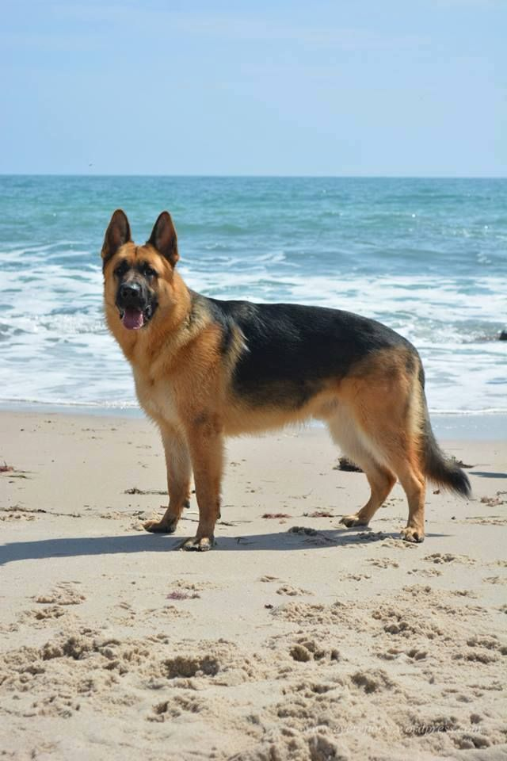
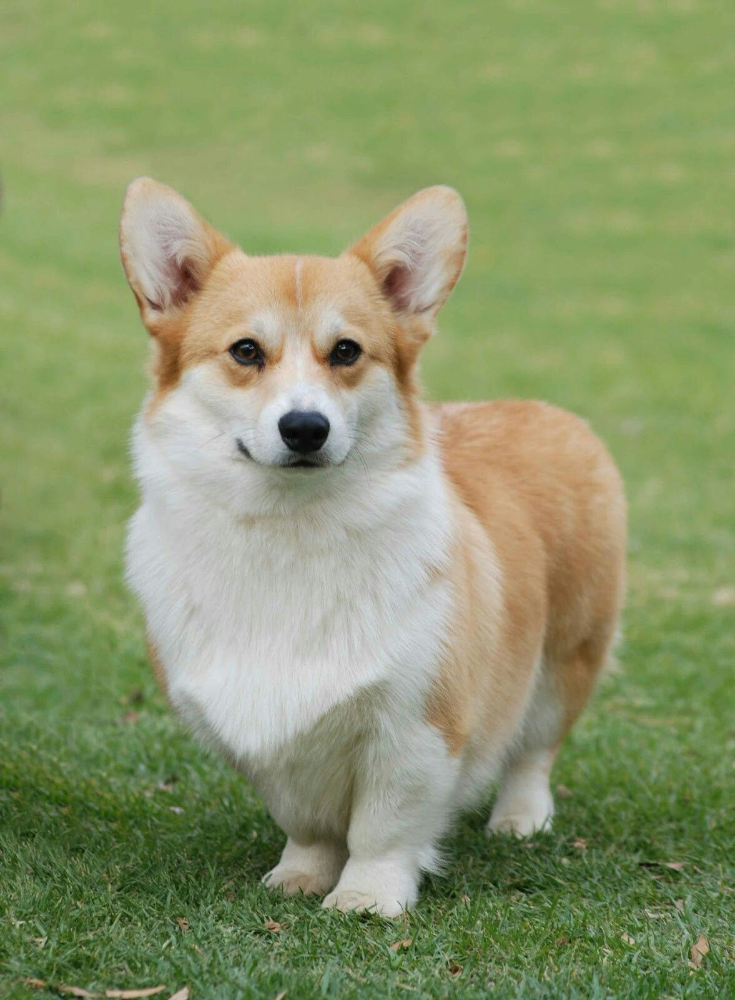
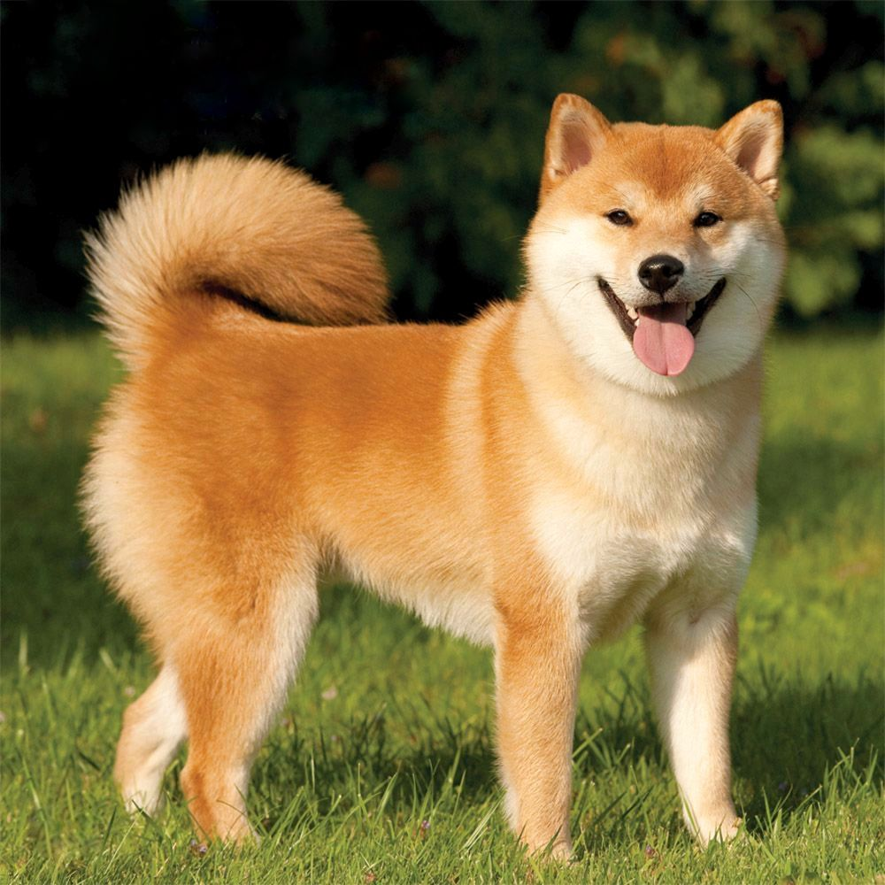

Meet Our Furry Friends
Explore different dog breeds using our interactive image slider.



Discover the wonderful world of dog breeds!
Explore different dog breeds using our interactive image slider.


